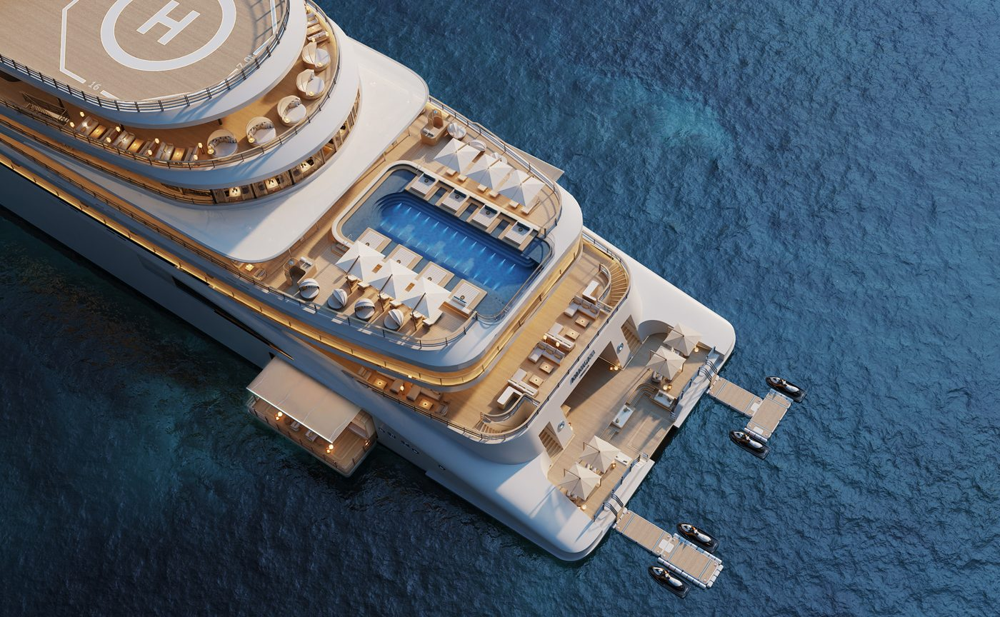

Aman’s next property will not sit on land. Amangati is a 47-suite motor yacht, still in build in Genoa, and its first Mediterranean season has just grown by four voyages.
The hull is at T. Mariotti, on the Ligurian waterfront where Italy has been putting ships together for a very long time. Nine decks. Ninety-four guests. Forty-seven suites, every one with its own terrace. Aman has spent thirty-five years building sanctuaries in deserts, forests and Venetian palazzi, and this is the first one that moves.
The name is Sanskrit for peaceful motion. Sinot Yacht Architecture & Design drew both the exterior and the interiors, and the proportions give away the intent: ceilings reach 2.5 metres, windows run the full height of the suite, and the terraces are deep enough to eat on. A Suite Host is assigned to each suite and, in the Aman manner, is meant to be barely noticed.
The spa
Aman put the spa at the top of the ship and gave it two floors. The company calls it the largest in luxury yachting. There is an open-air serenity garden laid out in the Japanese manner, and treatment rooms that face the ocean, some opening onto private terraces with whirlpool baths. A sixteen-metre pool sits high above the water on its own deck.

Amangati, the Marina and the upper-deck pool · Courtesy of Aman at Sea
Eight venues
Dining runs across eight bars and restaurants, four of them proper dining rooms. Akari is the signature room and it is Japanese. The Aman Grill cooks over fire in the open air. Menus follow the season rather than a fixed card, which on a ship crossing four coastlines in a summer means the kitchen has to keep buying ashore.
The marina
At the waterline, two platform wings fold out onto the sea. Tenders launch from there, swimmers go in from there, and it is the clearest statement of what Amangati is selling. Arriving by water means arriving without the quay, the queue or the hotel lobby.
A hotel that can move its own view is a different proposition to one that cannot.
The Splendid EditWhere it sails
Spring 2027 is the Mediterranean, and that season now carries four more voyages than it did when the calendar first went up. The routes split four ways: Mediterranean Spain, the French Riviera, the Italian Riviera with Sicily, and the Adriatic running through to the Greek islands and Turkey. Aman has written access to notable events in Monaco and Cannes into the programme, which is a neat way of solving the two hardest weeks of the year to book a room on that coast.
Autumn 2027 goes to the Caribbean. The Leeward Islands, the Windward Islands and the Dutch Caribbean, with the remote cays and reefs in between. Between the two seasons sits the Atlantic Passage, Malaga to Saint John’s in Antigua and Barbuda, 8 to 21 November 2027. Thirteen nights, most of them with nothing on the horizon, and a programme built around morning meditation on the yoga deck.
The paperwork
The yacht is registered in Malta and operated by Positive Ocean OpCo under licence from the Aman Group. Reservations are open, private charters are available, and the whole ship can be taken for an event. Aman is careful to note that itineraries and specifications are proposed rather than fixed, which is standard for a vessel that has not yet gone in the water.
Nothing has launched. The renderings show a long white hull with a plain sheer line and very little ornament, which reads as Aman even at this stage. Genoa has until spring.
Ship specifications, design credits, venue names, itineraries and build details from the Aman at Sea website and press room, amanatsea.com, accessed 25 September 2026. Images are renderings supplied by Aman at Sea; the vessel is in build. Aman at Sea states that features, plans and itineraries are proposed and subject to change.
Photography courtesy of Aman at Sea — © Aman at Sea, Amangati